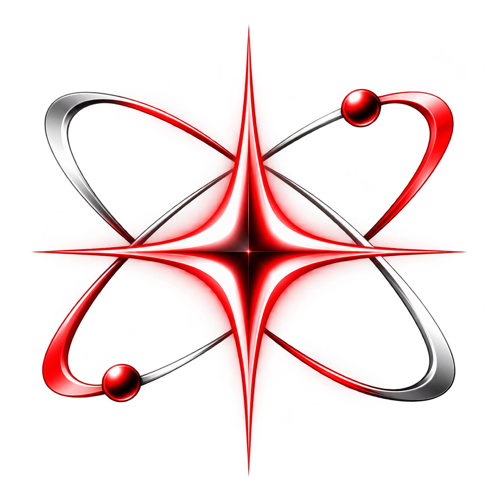

Build
Coding, debugging, architecture, and product creation.

ATOMIC IONSPIRESTUDIOSINDEPENDENT BY DESIGNThe intelligence behind Atomic Ionspire.
Eve is being developed as a private, local-first AI system that can understand the company's code, plans, products, and operating context.
Coding, debugging, architecture, and product creation.
Specialized agents, tools, tests, and workflows.
Research, analysis, business decisions, and escalation.
Train and evaluate Eve's core model with high-quality code and reasoning data.
Give Eve reliable project context, terminal workflows, web research, and measurable evaluations.
A secure founder console for plans, approvals, voice, agents, and company status.